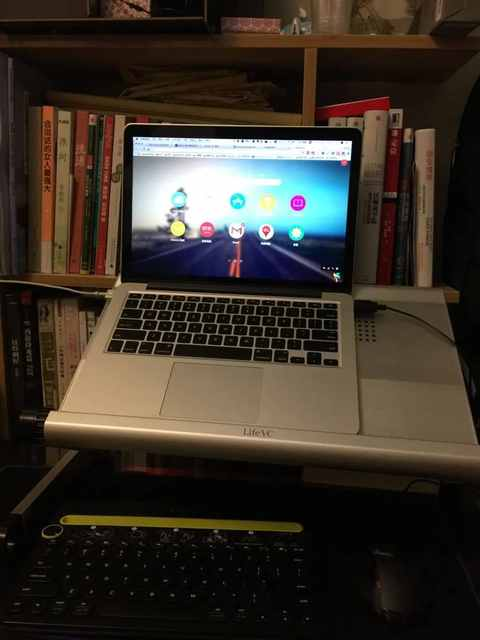
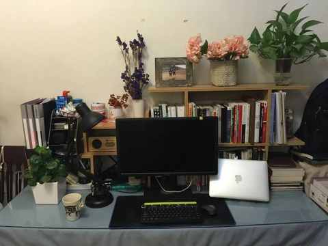
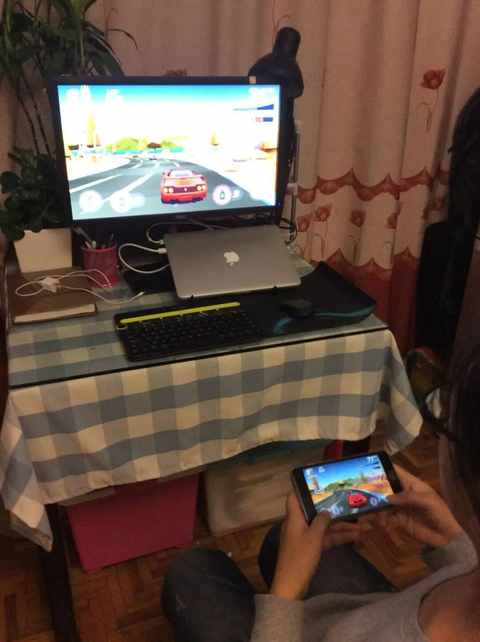
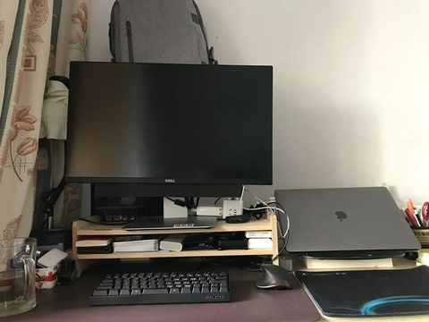
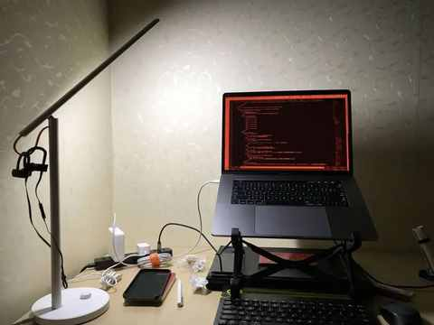
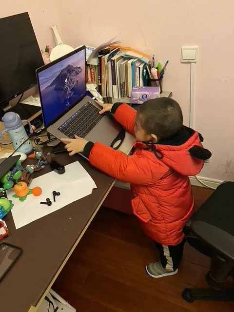
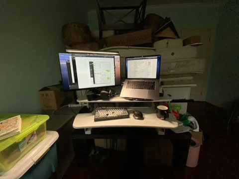
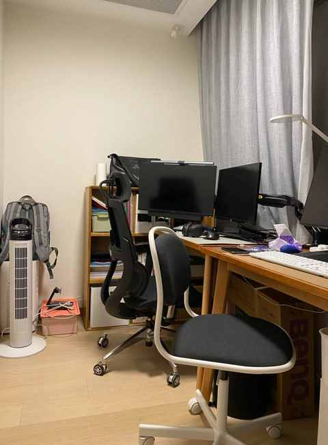
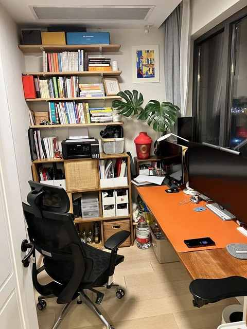
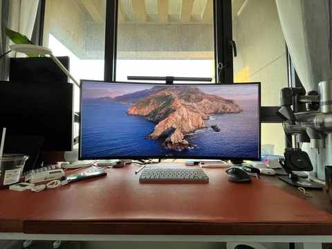

连续 9 年居家办公的 4 点体验与 5 个收获
1️⃣ 什么是居家办公？
按照惯例依然是先询问了 Kimi 关于居家办公的定义，总结很是完善，优点和缺点都有列举。

2️⃣ 什么时候开始居家办公的？
具体日期已经记不清，大概是从 2015 年的暑期开启的，居家办公的时间已经超过 9 年，从 26 岁到 35 岁。
3️⃣ 使用的办公设备是哪些？
主力设备是 Macbook Pro，日常会连上显示器使用，桌面空间的情况下会使用和显示器一起组成双屏，再结合外接的鼠标和键盘。
在翻开手机相册的过程中能清晰的感知到时间的流逝，照片拍摄的场所不一，使用的设备不同，桌上的布局也是各有千秋。










设备建议：
① 显示器：最好是 4k 的分辨率， 大厂 ，颜色准一点（红米最近就出来一款性价比超高的）
② 鼠标：不想对比的话，直接在罗技店里面找一找符合需求的款
③ 键盘：机械键盘值得一试
④ 打印机：一定选支持无线打印的，不需要有线子连着电脑，打开之后只要连上 wifi 的手机、平板、电脑均能打印
4️⃣ 长期居家办公的体验有哪些？
1）不用通勤真的爽
开启居家办公之后，日常就极少在上下班高峰期去挤地铁和赶公交。
2）工作和生活的相对平衡
能更好的兼顾个人及家庭需求，特别是有几年娃经常生病，三天两头就要跑医院，送娃去医院就不用请假之类的。
3）各种语音（视频）会议并不少
在协作过程中比如会涉及到不少细节的确认，项目节点的对接，这种时候语音会议就是刚需，有时候一天下来的会议频次和时长远比在办公室工作的时候多。
4）线下见面不可或缺
再真实的 VR 也无法替代线下见面沟通，不管是 i 人还是 e 人，都有和人面对面交流的需要。
5️⃣ 长期居家办公有哪些收获？
1） QQ 实属是办公利器
即便现在有了 钉钉、飞书等工具，也依然是办公利器，现在挺多中小学的班级群估计都还是 QQ 群为主。
2）趁手的设备极其重要
古人云：“工欲善其器，必先利其器。”
并不是越贵越好，适合自己和符合当下的需求最最重要。
3）居家办公不适合所有人
部分人在办公室和在家都能长期办公，大部分人可能更适合于在办公室进行各项工作。
如果尝试居家办公一段时间之后觉得效率低且状态不好，不妨去到一些共享办公的场所试试看。
4）硬币的正面与反面
居家办公能带来时间和空间上相对更多的自由度，但是要驾驭这种自由也并不容易，每个人需要磨合与适应的时间都不一样。
5）早睡早起 VS 晚睡晚起
基于身体健康和工作效率的考量，过渡到相对来说早睡早起会比 晚睡 晚起 更利于把居家办公坚持的更久。